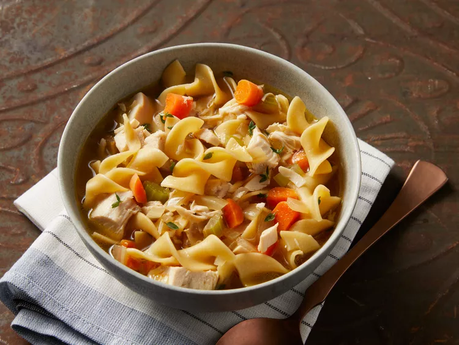

Home
Chicken Noodle Soup

Description
This homemade chicken noodle soup is soul-warming and deliciously simple —
just chicken and noodles. What makes it so good is the homemade roasted
chicken stock.
list of ingredients need for serving size of two
- 2 tablespoons butter
- 1 cup diced carrot
- 1 cup diced onion
- 1 cup diced celery
- ½ teaspoon fresh thyme leaves
- 2 pinches salt
- 4 tablespoons melted chicken fat
- 4 quarts roasted chicken broth (see footnote for recipe link)
- 8 ounces uncooked wide egg noodles
- 4 cooked boneless chicken breast halves, cubed
- 2 pinches cayenne pepper (Optional)
- salt and ground black pepper to taste
Directions
-
Melt butter in a large soup pot over medium heat. Stir in carrot, onion,
celery, thyme, and salt. Add chicken fat; cook and stir until onions
turn soft and translucent, 5 to 6 minutes.
-
Stir in roasted chicken broth and bring to a boil. Season with salt, if
necessary.
- Stir in egg noodles; cook until tender, about 5 minutes.
-
Add cooked chicken breast meat; simmer until heated through, about 5
minutes. Season with cayenne pepper, salt, and black pepper.
- Serve hot and enjoy!
Extra notes
This recipe calls for Chef John's Roasted Chicken Broth.
Reference
Chicken Noodle Soup